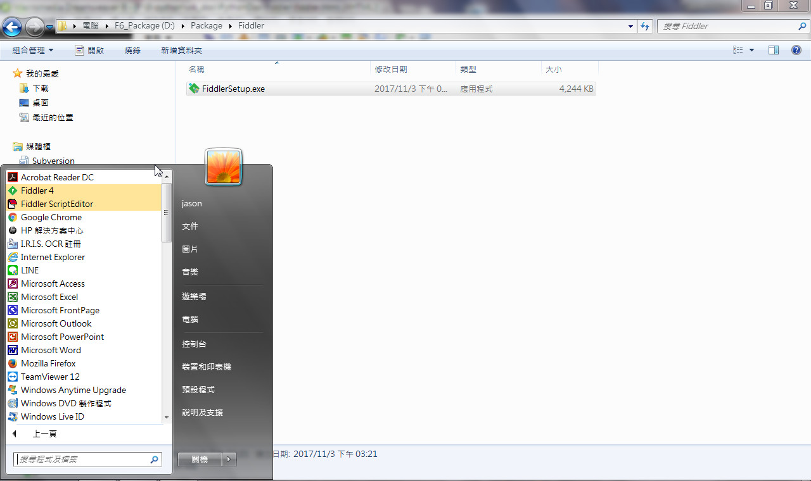

1.Fiddler下載網址:https://www.telerik.com/download/fiddler
2.點擊How do you plan to use Fiddler?
3.選擇Website development/debugging
4.填寫Email Address，勾選I accept the Fiddler End User License Agreement
及點擊Download for Windows
5.下載完成後，以系統管理員身分執行FiddlerSetup.exe:
6.I Agree:
7.Install:
9.完成後，點擊 開始 按鈕，查看所有程式，會看到如下圖所示之 Fiddler4及Fiddler ScripEditor
